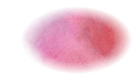
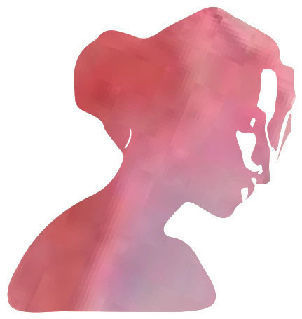
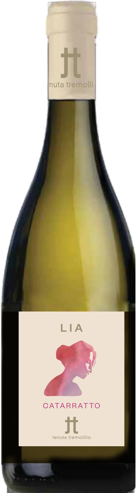

Tenuta Tremollito
LIA
Catarratto · IGT Terre Siciliane
Named after Lia, Rosalia Toscano, the youngest of the Malavoglia children in Verga’s I Malavoglia (1881). Toscano is the family’s real name; Malavoglia is what the village calls them.

Fact sheet: LIA
Catarratto
Deep straw yellow. Yellow peach, grapefruit and citrus. Dry, savoury, fresh and mineral.
- Grape
- Catarratto
- Area
- Monte Altore, Vizzini (Catania)
- Altitude
- 500 to 600 m
- Soil
- Sandy and volcanic, rich in minerals, slightly acidic
- Climate
- Mountain and high hill, well ventilated, with wide swings between day and night
- Training
- Espalier
- Vine age
- 10 to 15 years
- Density
- About 5,500 vines per hectare
- Yield
- 7,000 kg/ha
- Harvest
- By hand in September, depending on the weather
- Winemaking
- Gently destemmed and crushed, soft-pressed and fermented in steel at controlled temperature, then 3 months on the fine lees
- Ageing
- 4-6 months in steel, then about 3 months in bottle
- Alcohol
- 12.5%
- Serve at
- 10 to 12°C
IGT Terre Siciliane
E-label · Ingredients and nutrition
The information required on the bottle under EU Regulation 2021/2117. No marketing on this part of the page.
| Ingredients | To come from the oenologist |
|---|---|
| Allergens | To come (contains sulphites) |
| Energy per 100 ml | — kJ / — kcal |
| Carbohydrates per 100 ml | — g, of which sugars — g |
| Alcohol | 12.5% |
| Packaging and recycling | To come |